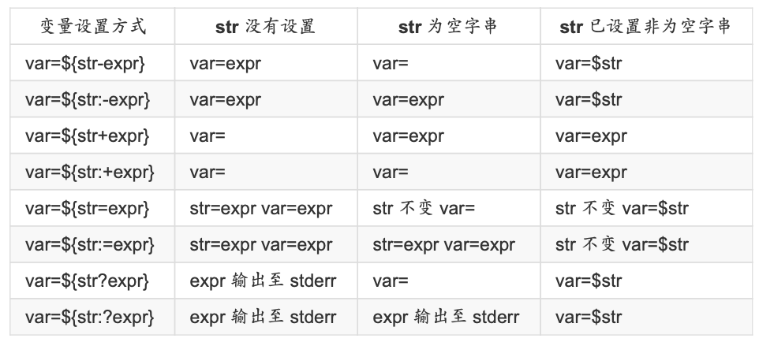
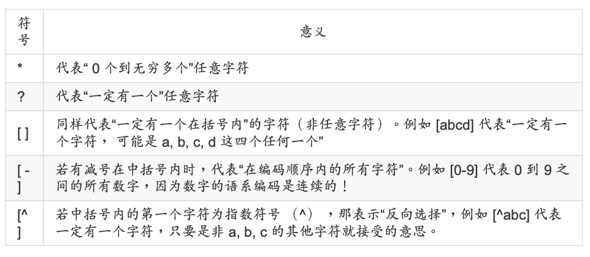
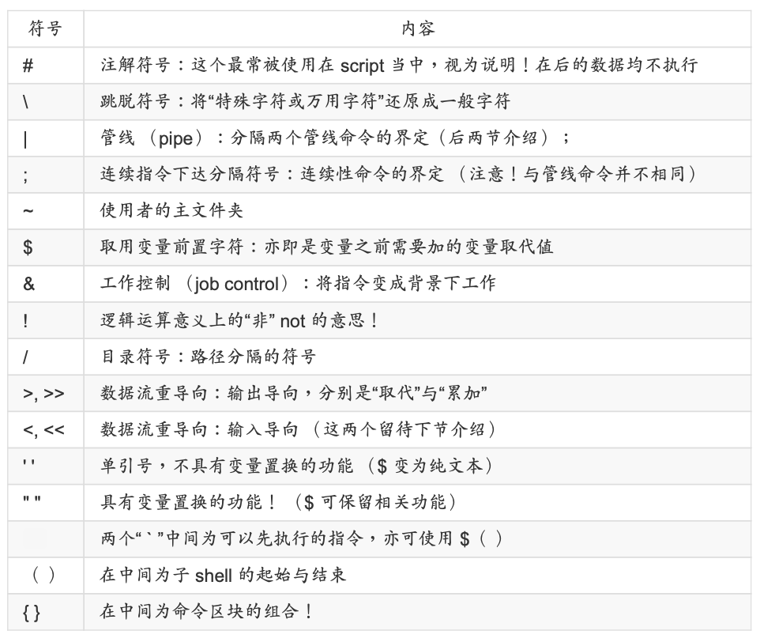

认识bash
echo
变量设置
1 | NAME=shell |
变量取用
1 | echo $HOME |
扩增变量内容
1 | PATH="$PATH":/home/bin |
取消变量
1 | unset NAME |
env和set
env为环境变量
set为自定义变量
export自定义变量转为环境变量
read、array、declare
1 | 输入 |
ulimit文件系统限制
1 | ulimit文件系统限制 |
删除字串
1 | # 从头删 |
| 变量设置方式 | 说明 |
|---|---|
| ${变量#关键字} | 若变量内容从头开始的数据符合“关键字”，则将符合的最短数据删除 |
| ${变量##关键字} | 若变量内容从头开始的数据符合“关键字”，则将符合的最长数据删除 |
| ${变量%关键字} | 若变量内容从尾向前的数据符合“关键字”，则将符合的最短数据删除 |
| ${变量%%关键字} | 若变量内容从尾向前的数据符合“关键字”，则将符合的最 长数据删除 |
| ${变量/旧字串/新字串} | 若变量内容符合“旧字串”则“第一个旧字串会被新字串取代” |
| ${变量//旧字串/新字串} | 若变量内容符合“旧字串”则“全部的旧字串会被新字串取代” |

命令别名与历史命令
1 | alias lm='ls -al|more' |
Bash环境
bash初始化会读取两个文件/etc/profile和~/.bash_profile或类似名称的文件
/etc/profile.d/*.sh
只要在 /etc/profile.d/ 这个目录内且扩展名为 .sh ，另外，使 用者能够具有 r 的权限， 那么该文件就会被 /etc/profile 调用进来。在 CentOS 7.x 中，这个 目录下面的文件规范了 bash 操作接口的颜色、 语系、ll 与 ls 指令的命令别名、vi 的命令别 名、which 的命令别名等等。如果你需要帮所有使用者设置一些共享的命令别名时， 可以在 这个目录下面自行创建扩展名为 .sh 的文件，并将所需要的数据写入即可喔!


$$
1.若 cmd1 执行完毕且正确执行($?=0)，则开始执行 cmd2。 2. 若 cmd1 执行完毕且为错误 ($?≠0)，则 cmd2 不执行。
||
1.若 cmd1 执行完毕且正确执行($?=0)，则 cmd2 不执行。 2. 若 cmd1 执 cmd2 行完毕且为错误 ($?≠0)，则开始执行 cmd2。
管道|
cut和grep
cut分析每行，截取对应部分
grep截取满足要求的行。
sort,wc,uniq
tee
双重重定向：同时屏幕和文件
字符转换命令 tr, col, join, paste, expand
参数代换: xargs
分区命令: split
shell script
执行方式
通过./test.sh和sh test.sh的方式是在子程序中执行的。
通过source test.sh的方式是在父程序中执行的。
判断符号
[ "$HOME" == "$MAIL" ]
参数变量($0,$1,$2)
条件判断式
1 | if [ 条件判断式 ]; then 当条件判断式成立时，可以进行的指令工作内容; |
1 | if [ 条件判断式一 ]; then |
1 | case $变量名称 in <==关键字为 case ，还有变量前有钱字号 |
function
1 |
|
1 | while [ condition ] <==中括号内的状态就是判断式 |
1 | until [ condition ] |
1 | for var in con1 con2 con3 ... |
1 | for （（ 初始值; 限制值; 执行步阶 ）） |